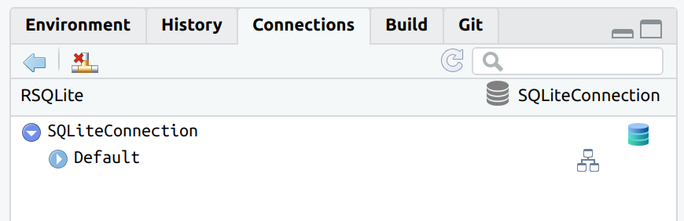
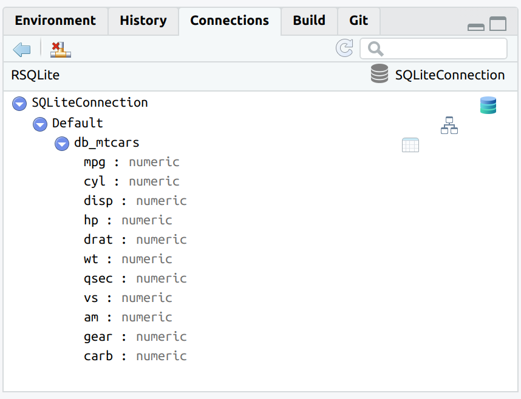
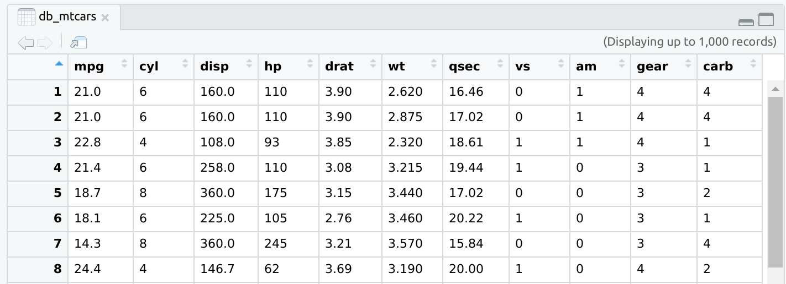
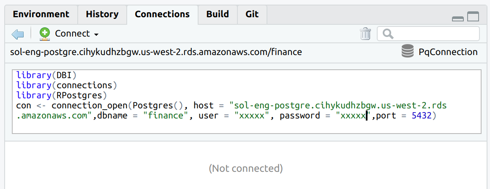
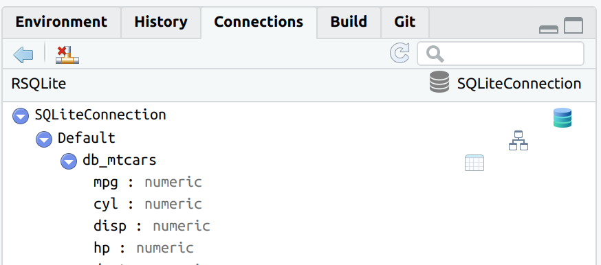
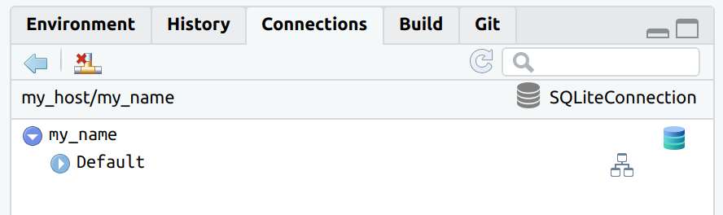
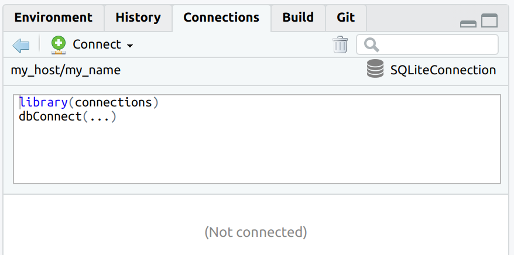
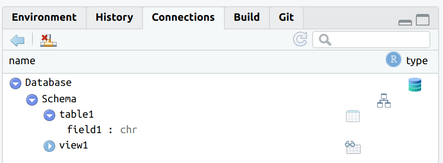
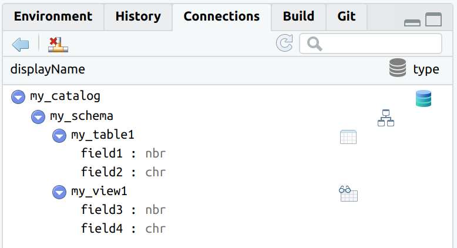

Intro
The main goal of connections is to integrate DBI-compliant packages with the RStudio IDE’s Connection Pane. Packages such as RPostgres, RSQLite, RMariaDB and bigrquery connect R to those databases, but do not provide a direct integration with the Connections Pane. connections reads the configuration of the connection and creates the integration with RStudio.
A second goal of connections is to provide a simpler API to the way RStudio Connections pane integrates with R. This is meant for use by advanced R developers who wish to create custom connection configurations, or for DBI-compliant package developers who wish to directly integrate the Connections pane with their package.
Installation
Install the development version from GitHub with:
Basic Use
Simply use connection_open(), instead of dbConnect(), to open the connection. The same arguments used for dbConnect() can be passed to connection_open().
library(connections)
library(RSQLite)
library(DBI)
con <- connection_open(SQLite(), path = ":dbname:")
connection_open() integrates with DBI, so creating a new table in the database will automatically refresh the Connections Pane.

The “Preview table” is also integrated to pull the top 1,000 records.

To close the connection, use connection_close() or via the “Disconnect” button in the Connections pane. This will close the connections pane, and also the database connection.

After closing, the code that can be used to re-connect is displayed in the Connections pane.
DBI-compliant packages
The main use for connections is to integrate the Connections pane with DBI-compliant connection packages. These packages include:
An example of using connections with RSQLite is shown in the examples above. Here is an example of using connections with RPostgres:
library(RPostgres)
library(DBI)
con <- connection_open(
Postgres(),
host = "sol-eng-postgre.cihykudhzbgw.us-west-2.rds.amazonaws.com",
dbname = "finance",
user = "xxxxx",
password = "xxxxx",
port = 5432
)
The code to reconnect is automatically created. connection_open() makes sure to also add a library() call for the respective DBI-compliant package.

Non-integrated mode
Even if dbConnect() is used to connect to the database, it is still possible to use the Connections pane.
After connecting, use connection_view() to populate the Connections pane. Pass the connection variable to it.

Updating the database after the connection will not automatically refresh the Connections pane.
To refresh the Connections pane, use connection_update()

In this case, the code to reconnect will not be available after closing.

It is also possible to customize the host, name, and connection_code in connection_view(). The idea is to make it easier to distinguish each connection in the list, as well as to provide a way to set the re-connection code.
con <- dbConnect(SQLite(), path = ":dbname:")
connection_view(
con,
host = "my_host",
name = "my_name",
connection_code = "library(connections)\ndbConnect(...)"
)
Connection code is sourced from connection_code

Advanced Users
To create a custom connection structure use a list object. The main advantage of using this pattern is that the tree structure of database/schema/table/fields can be passed as a nested list.
my_conn <- list(
name = "name",
type = "type",
host = "host",
connect_code = "",
connection_object = "",
icon = "/usr/home/edgar/R/x86_64-pc-linux-gnu-library/3.6/connections/images/package-icon.png",
disconnect = function() connection_close(my_conn, "host", "type"),
preview_object = function() {},
catalogs = list(
name = "Database",
type = "catalog",
schemas = list(
name = "Schema",
type = "schema",
tables = list(
list(
name = "table1",
type = "table",
fields = list(
name = "field1",
type = "chr")
),
list(
code = list(as.list(data.frame(name = "view1", type = "view", stringsAsFactors = FALSE)))
)
))
))
conn_list <- connection_contract(my_conn)
connection_view(conn_list)
The list can also be sourced from a non-blob file, such as a YAML file. connections provides a few examples, here is the simple.yml file being used to source a Connections pane.
spec_path <- system.file("specs", "simple.yml", package = "connections")
simple_spec <- yaml::read_yaml(spec_path)
